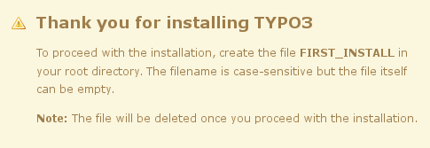
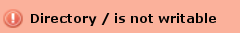
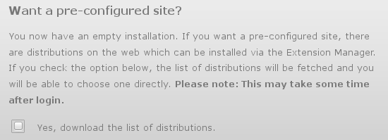
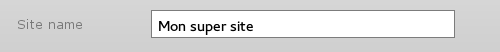

Documentation
Création des liens symboliques
Il est recommandé d’installer séparément la source (le « moteur ») de Typo3 et le site lui-même. Ainsi, il sera plus aisé de faire les mises à jour du moteur sans toucher aux fichiers propres au site.
Pour ce faire, et à titre d’exemple, on mettra à la racine de son serveur (le dossier public_html ou www ou htdocs), dans un dossier source le moteur de Typo3 (c-a-d l'archive zip ou tar.gz que l’on a téléchargée sur le site de Typo3 puis décompressée).
Voici son contenu :
[les dossiers sont indiqués en gras, les fichiers en italique]
www- source
- typo3
- _.htaccess
- ChangeLog
- composer.json
- index.php
- INSTALL.md
- LICENSE.txt
- NEWS.md
- README.md
- source
Ensuite,
- il faudra faire des liens symboliques :
- vers le répertoire source
- vers le fichier index.php
- vers le répertoire typo3
- et copier le fichier _.htaccess en le transformant en .htaccess
Exemple d’une installation multi-sites avec un site installé à la racine du serveur et un autre dans un dossier spécifique appelé site2 :
[les liens symboliques sont en gras et suivis d’une flèche →]
www- source
- typo3_src → source
- index.php → source/index.php
- typo3 → source/typo3
- .htaccess
- site2
- typo3_src → ../source
- index.php → ../source/index.php
- typo3 → ../source/typo3
- .htaccess
Sur un système du type UNIX, les commandes pour créer les liens symboliques et copier le htaccess sont :
- pour le site à la racine du serveur :
cd www
ln -s source typo3_src
ln -s typo3_src/index.php index.php
ln -s typo3_src/typo3 typo3
cp typo3_src/_.htaccess .htaccess
- pour le « site2 » :
cd www/site2
ln -s ../source typo3_src
ln -s typo3_src/index.php index.php
ln -s typo3_src/typo3 typo3
cp typo3_src/_.htaccess .htaccess
Pour créer des liens symboliques sur un système Windows ou sur un serveur mutualisé, voir les annexes.
Suite de l'installation
Après avoir créé ces liens symboliques, ouvrir dans un navigateur l’URL correspondant au dossier du futur site.
Exemple, si le dossier en question s’appelle « Test_typo3 » et si on est en local, un URL possible serait :
http://locahost/Test_typo3
On arrive alors probablement sur le message suivant :

Il faut donc créer un fichier vide « FIRST_INSTALL » dans le répertoire (le nom de fichier ne doit pas avoir d’extension, par exemple du type .txt) pour pouvoir continuer l’installation.
Eventuellement, régler les droits pour permettre l’écriture dans ce répertoire, si un message de ce genre apparaît :

A l’étape 5 de l’installation, on ne coche pas la case permettant de télécharger une liste de distributions pré-configurées :

Ainsi, on partira réellement de « zéro ».
Création de l’architecture du site
Lorsqu’on se loggue pour la première fois dans l’interface administrateur (le « backend »), le nom du site entré à l’étape 4 de l’installation :
